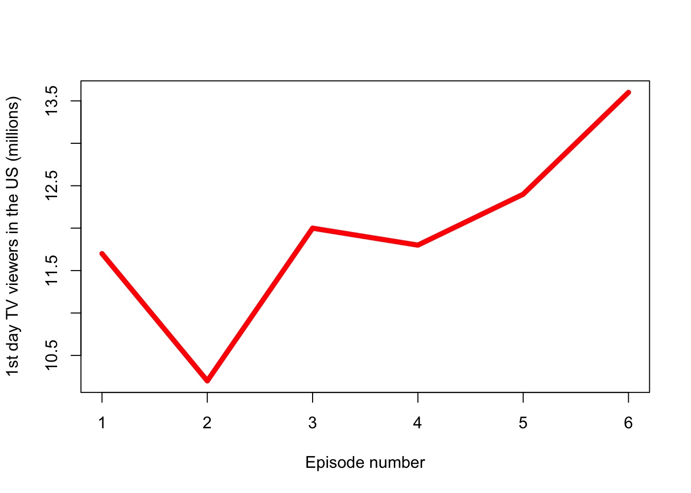

Assignment
Game of Thrones - Season 1 summary in numbers
(Warning: spoilers ahead)
Overview
(From the Wikipedia) Game of Thrones is an American fantasy drama television series created by David Benioff and D. B. Weiss for HBO. It is an adaptation of A Song of Ice and Fire, a series of fantasy novels by George R. R. Martin, the first of which is A Game of Thrones.
Set on the fictional continents of Westeros and Essos, Game of Thrones has a large ensemble cast and follows several story arcs throughout the course of the show. A major arc concerns the Iron Throne of the Seven Kingdoms of Westeros through a web of political conflicts among the noble families either vying to claim the throne or fighting for independence from it. Another focuses on the last descendant of the realm’s deposed ruling dynasty, who has been exiled to Essos and is plotting a return to the throne. A third story arc follows the Night’s Watch, a military order defending the realm against threats from the North.
Season 1 summary
North of the Seven Kingdoms of Westeros, Night’s Watch soldiers are attacked by supernatural White Walkers. One soldier escapes but is captured at Castle Winterfell. Eddard “Ned” Stark, Warden of the North, executes him for desertion. Later, six orphaned dire wolf pups are found and one given to each Stark sibling, including Ned’s bastard son, Jon Snow. In King’s Landing, the Seven Kingdoms capital, Jon Arryn, the Hand of the King, dies suddenly. King Robert Baratheon, Ned’s old friend, travels to Winterfell to recruit Ned and propose a marriage between his heir Joffrey and Ned’s daughter, Sansa. Lysa Arryn, Jon’s widow, sends her sister (Ned’s wife), Catelyn, a letter claiming the Lannisters, Queen Cersei’s family, murdered Arryn. Catelyn believes the Lannisters are now plotting against King Robert. Ned’s young son, Brandon, climbs a tall tower and witnesses Cersei and her twin brother, Jaime Lannister, inside having sex. To hide their incest, Jaime pushes Bran from the high window. Across the Narrow Sea in Essos, exiled Prince Viserys Targaryen forces his sister, Daenerys, to marry the Dothraki warlord, Drogo, in exchange for an army to conquer Westeros and reclaim the Iron Throne. Robert Baratheon became king after Jaime Lannister killed “Mad” King Aerys Targaryen, earning Jaime the nickname, “The King Slayer”. The ancient Targaryens once commanded dragons, and Daenerys is given three fossilized dragon eggs as a wedding gift. Ned, the new Hand of the King, travels to King’s Landing accompanied by his daughters, Sansa and Arya. Catelyn remains at Winterfell to care for the still unconscious Bran. An assassin attacks Bran, but Catelyn fends him off and Bran’s direwolf, Summer, kills him. Catelyn suspects the Lannisters were behind the attack. Ned’s illegitimate son, Jon, heads north with his uncle, Benjen Stark, to join the Night’s Watch, the protectors of the Wall, a massive ice structure that keeps the Wildling tribes and the mythical White Walkers from civilized Westeros. Before departing, Jon gave tomboy Arya a thin sword she names, “Needle”. Queen Cersei’s younger brother, Tyrion Lannister, a dwarf also known as “The Imp,” accompanies Jon to the Wall. In King’s Landing, Prince Joffrey threatens Arya’s young commoner friend, later having him killed. Nymeria, Arya’s direwolf, defends her, biting Joffrey. Cersei demands that Robert have the wolf killed, but Arya releases Nymeria to the wild. Sansa’s direwolf, Lady, is killed instead. In Winterfell, Brandon awakens, remembering nothing about his fall. He will live, but his legs are permanently paralyzed. Meanwhile, Daenerys is befriended by Ser Jorah Mormont, a disgraced knight, while she focuses on learning how to please Drogo. Ned attends the King’s Small Council and learns Westeros has been poorly managed and deeply in debt. Catelyn travels to King’s Landing to covertly warn her husband about the assassination attempt, but she is intercepted by her childhood friend, Councillor Petyr “Littlefinger” Baelish. Bran learns he will never walk again and remains unable to remember the events leading to his fall. Jon struggles to adapt to life on the Wall. The once elite Night’s Watch now recruits many low-born and/or convicted criminals who are unimpressed by Jon’s bloodline. Lord Commander Mormont asks Tyrion to plead with the King to send more recruits to the Night’s Watch. Daenerys, now pregnant, stands up to her brother, Viserys, threatening him if he ever abuses her again. While returning to King’s Landing, Tyrion stops at Winterfell where he presents the Starks a saddle design that will allow the paraplegic Bran to ride a horse. Ned secretly investigates Jon Arryn’s death. In the process, he discovers one of King Robert’s illegitimate children, Gendry, an armorer. Robert and his guests attend a tournament honoring Ned, which Ned considers an extravagance. Jon takes measures to protect Samwell Tarly, an awkward and friendless Night’s Watch recruit from the other Watchmen’s abuse. A frustrated Viserys clashes with his newly-empowered sister. Sansa dreams of one day becoming queen, while Arya envisions a far different future. At a roadside tavern, Catelyn, who is Lord Hoster Tully’s daughter, unexpectedly encounters Tyrion Lannister. She rallies her father’s Riverrun allies to arrest Tyrion for conspiring to murder her son. King Robert’s eunuch spy, Varys, has uncovered that Daenerys Targaryen is pregnant. Ned rejects Robert’s plan to assassinate her, considering Daenerys a non-threat. He resigns in protest as Robert’s Hand, angering the king. Catelyn and her prisoner, Tyrion, arrive at her sister Lysa Arryn’s fortress home in the Eyrie. News of Tyrion’s capture reaches King’s Landing where Jaime Lannister, the Queen’s twin brother, demands answers from Ned. A vengeful Jaime orders Ned’s men killed and fights Ned until Jaime’s man stabs Ned in the leg from behind, leaving him wounded. King Robert reappoints Ned as Hand and tasks him with running affairs until Robert returns from hunting. Villagers from Riverrun arrive with news of atrocities committed by raiders, who Ned deduces were led by Ser Gregor Clegane, a Lannister retainer. Ned sentences Ser Gregor to death and summons Tywin Lannister to a trial. Ned decides to send Sansa (now reconciled with Joffrey) and Arya back to Winterfell. Ned has discovered that Joffrey and his two siblings are not Robert’s biological children, and were fathered by Jaime Lannister. Bran, while testing his new saddle, is attacked by rogue Wildings. Robb, Ned’s oldest son, and Theon, Ned’s captive ward, whose father, King Balon, was a fallen rebel, rescue him, and the woman Wilding, Osha, is enslaved. In the Vale, Tyrion demands a trial by combat. Lysa chooses Ser Vardis as her champion. The sellsword Bronn volunteers as Tyrion’s champion. He defeats Vardis and obtains Tyrion’s release. Meanwhile, Viserys grows impatient and angry waiting for Drogo to fulfill his promise, and he threatens to kill Daenerys’ unborn child. Drogo kills Viserys by pouring molten gold on his head. In King’s Landing, Ned confronts Cersei, saying he knows Jaime fathered her children and will inform King Robert. Before he can, Robert is critically wounded while hunting boar. As Robert lies dying, he signs a proclamation naming Ned “Protector of the Realm,” until Robert’s heir can assume the throne. Ned amends the wording to say the king’s rightful heir. Ned sends word to Stannis, Robert’s brother, the legal heir to the throne. Ned asks Petyr Baelish to secure the City Watch’s loyalty. After Robert’s death, Ned confronts Cersei and Joffrey in the throne room, where Baelish and the City Watch betray Ned and attack his men. At the Wall, Benjen Stark disappears during a foray north of the Wall. Jon and Sam are assigned as stewards, with Jon as Lord Commander Jeor Mormont personal servant. Jon is disappointed he was not chosen as a ranger until Sam points out that Commander Mormont likely intends to groom him for command. The stewards swear their loyalties to the Night’s Watch. In Essos, King Robert’s hired assassin is exposed by Ser Jorah before he can poison Daenerys. Drogo vows to conquer the Seven Kingdoms for his unborn son and starts marching towards Westeros. Arya escapes the Red Keep after Syrio Forel, her Braavosian sword master, fends off guards sent to arrest her, while Sansa is captured. Robb hears the news and prepares the Northern armies to fight the Lannisters, leaving Bran behind to rule Winterfell. Lysa refuses to fight the Lannisters, and Catelyn leaves to join Robb’s camp. Tyrion and Bronn are surrounded by Shagga, leader of the Stone Crows tribe. Tyrion convinces them to escort him to his father Tywin Lannister, who will pay them. At the camp, Tywin asks Shagga to help them confront the Starks in exchange for even greater payment. At the Wall, some bodies affected by the White Walkers are found. One awakens as a wight and attack Commander Mormont, but Jon kills it. In Essos, Drogo’s soldiers begin attacking nearby settlements, enslaving locals in order to sell them to raise money to buy ships to cross the Narrow Sea. Drogo is wounded in a fight. Joffrey appoints his grandfather, Tywin, as Hand of the King. Sansa begs Joffrey to show Ned mercy. Joffrey agrees if Ned publicly recognizes Joffrey’s claim to the throne and admits to committing treason. The Stark army arrives at the Twins castle; Catelyn persuades Lord Walder Frey to allow them to pass through his land and assist them in exchange for Robb and Arya marrying two of Frey’s many unattractive offspring in the future. At the Wall, Jeor Mormont gives his family Valyrian steel sword to Jon in gratitude; Maester Aemon reveals to Jon that Aemon is a Targaryen. In Essos, Drogo’s wound becomes septic and his death imminent. Daenerys asks a mystic slave woman to use blood magic to save him. The woman tells everyone to remain outside the tent until after the spell is cast. Daenerys goes into labor, and Jorah brings her into the tent seeking aid. Robb sacrifices 2,000 soldiers to fight the Lannister army as a diversion so he can move his army and capture Jaime. In a public hearing, Ned confesses to treason and publicly affirms Joffrey is the rightful heir. However, rather than sparing his life as negotiated, the vengeful and increasingly insane Joffrey has him decapitated, while Sansa, Cersei, and other counselors object futilely. Sansa is forced to watch her father die while Arya is nearby in the crowd. The North secedes from the Seven Kingdoms and proclaims Robb as king. With Jaime as the Starks’ prisoner and Robert’s two brothers, Stannis and Renly, each challenging Joffrey’s claim to the throne, Tywin appoints Tyrion as acting King’s Hand, while Tywin fights to defend Joffrey’s reign. Jon attempts to desert the Night’s Watch to avenge Ned and join Robb, but his Night’s Watch brothers convince him to honor his oath. Jon joins an expedition to search for Benjen Stark beyond the Wall. Yoren, a Night’s Watch recruiter, smuggles Arya out of King’s Landing disguised as a boy, while Joffrey intends to crown Sansa his queen, despite executing her father. Daenerys’s baby is born deformed and dead, and Drogo is left in a vegetative state by the witch’s treacherous magic. Daenerys compassionately ends Drogo’s life. She places the three dragon eggs on Drogo’s funeral pyre and sets it afire, also burning the witch alive. Ignoring Jorah’s pleas, she walks into the flames. When the embers die the following morning, Daenerys is found in the ashes, unharmed, flanked by three newly-hatched baby dragons. Jorah and other witnesses kneel before her.
You can see how the viewership of the episodes changed in Figure 1.